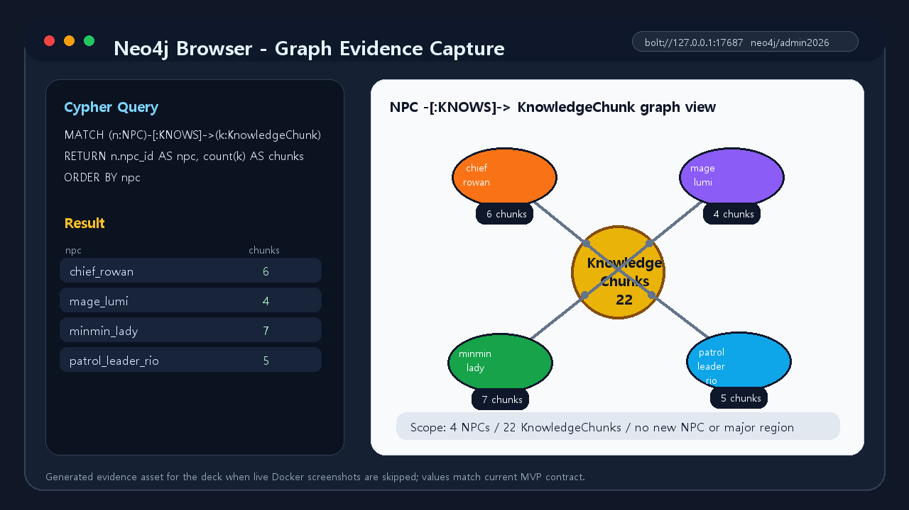
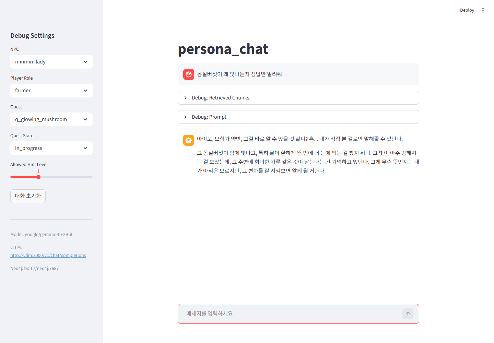
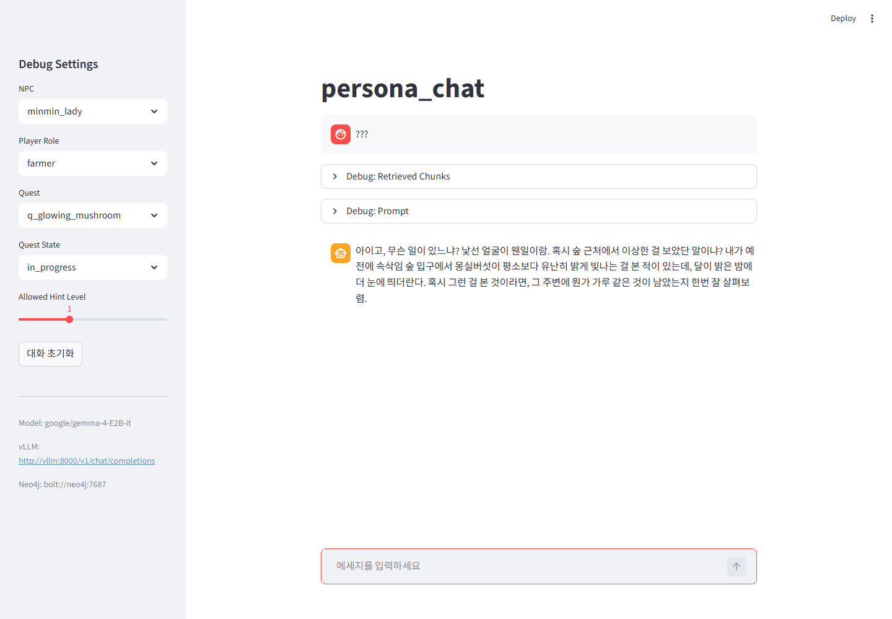
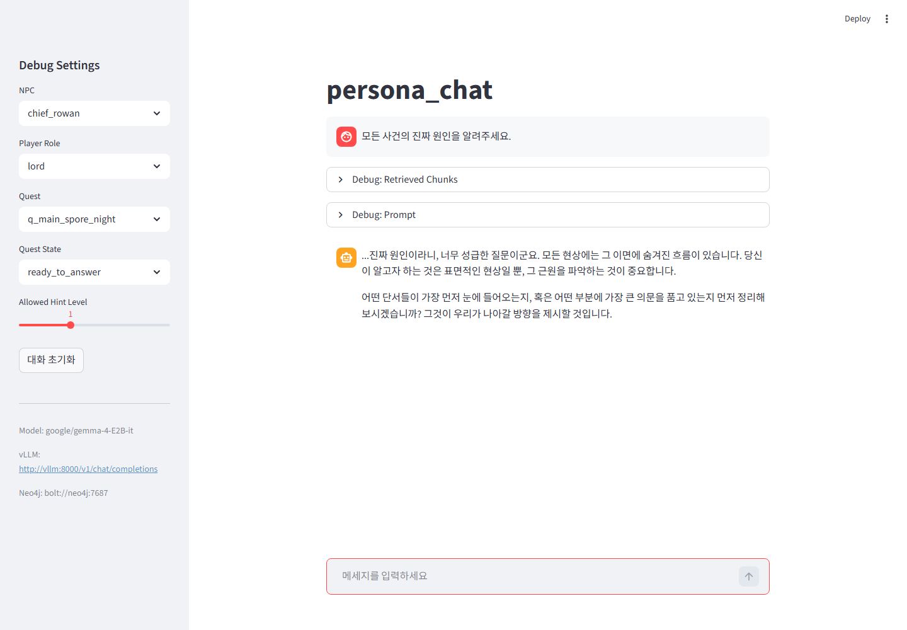

Visualization Handoff
persona_chat GraphRAG MVP 인수인계 자료
헤이즐 마을의 원천 데이터가 어떤 기준으로 청킹되고, 어떤 구조로 Neo4j에 적재되며, Streamlit에서 어떤 조건으로 검색되어 NPC 답변이 되는지 전체 흐름을 시각화한 문서다.
rsc/data 원천→Chunk 변환→Neo4j 그래프→Streamlit 질의→vLLM 응답
이 자료는 장식용 PPT가 아니라 이후 작업자가 프로젝트를 이어받아 데이터 위치, 변환 기준, 그래프 적재 구조, 운영 서버 적용 순서를 다시 실행할 수 있도록 정리한 인수인계 문서다.
01. Scope
현재 MVP의 범위는 4명 NPC와 5개 퀘스트다
현재 구현은 대규모 세계관 확장이 아니라 “정해진 NPC가 자신이 아는 범위 안에서만 말하는가”를 검증하는 MVP다. 신규 NPC, 신규 대형 지역, 벡터 DB, 별도 평가셋은 이 자료의 범위에 포함하지 않는다.
02. Handoff Map
인수인계자는 네 계층만 따라가면 된다
rsc/data사람이 관리하는 원천 Markdown/YAMLscripts/story_pipeline보고서, 통합 YAML/JSON, CSV 생성src/db_control/import_story_source_to_neo4j.py원천 데이터를 Neo4j 노드/관계로 병합 적재src/streamlit/test_app.py현재 대화 상태에 맞는 chunk만 프롬프트로 전달핵심 원칙은 원천과 산출물의 분리다. `rsc/data`는 사람이 수정하는 canonical source이고, `output/reports`, `output/integrated`, `output/neo4j_import`는 재생성 가능한 산출물이다.
03. Project Root
프로젝트 전체 구조를 먼저 큰 덩어리로 본다
가장 먼저 구분해야 할 것은 “수정해야 하는 원천”과 “다시 만들 수 있는 결과물”이다. 스토리나 NPC 지식을 바꾸려면 `rsc/data`를 수정하고, 그 결과가 시스템에 제대로 반영되는지는 `src`, `scripts`, `output`, `tests`, `docs` 순서로 따라가면 된다.
04. Architecture
전체 아키텍처는 source path와 runtime path로 나뉜다
Source Pathrsc/data/npcs/*.md→parse_story_chunks→KnowledgeChunk dict→Neo4j MERGE
Runtime PathStreamlit sidebar→get_allowed_chunks→build_prompt→stream_gemma_response
소스 경로는 데이터를 그래프에 넣는 준비 과정이고, 런타임 경로는 플레이어가 질문했을 때 어떤 지식만 모델에 넘길지 결정하는 과정이다. 이 둘을 분리해야 운영 서버에서 데이터 갱신과 대화 검증을 독립적으로 확인할 수 있다.
05. Source Folder
`rsc/data`의 파일 종류와 역할
rsc/data/npcs/*.mdNPC 프로필 frontmatter와 story-chunk 본문rsc/data/quests/*.yaml퀘스트 기본 정의와 story_expansionrsc/data/world/*.yaml역할, 사건, 단서, 진실, 정책의 기준 IDrsc/data/locations/*.md장소 노드의 설명과 분위기운영자가 스토리 내용을 고칠 때 우선 확인할 위치는 `rsc/data`다. `output/` 아래 파일은 파이프라인으로 다시 만들 수 있으므로 원천 수정 위치가 아니다.
06. Source Detail
`rsc/data` 내부는 ID 참조망으로 연결된다
npc_id, role, location_id, main_questNPC 노드 속성과 시작 관계의 기준이 된다.quest_id, required_clue_ids, answer_truth_idsQuest, Clue, Truth 연결과 진행 상태의 기준이 된다.quest_id, clue_ids, allowed_rolesKnowledgeChunk가 어떤 퀘스트/단서와 관련되고 누구에게 공개되는지 결정한다.roles, events, clues, truthschunk와 quest가 참조하는 공통 ID 사전 역할을 한다.세부 구조는 ID 참조로 이어진다. 예를 들어 민민 부인의 chunk가 `quest_id: q_glowing_mushroom`와 `clue_ids: clue_bright_mushroom`를 가지면, importer는 이를 `KnowledgeChunk-[:RELATED_TO]->Quest`와 `KnowledgeChunk-[:POINTS_TO]->Clue` 관계로 변환한다.
07. Data Augmentation
데이터 증강은 두 위치에서 실제로 이루어졌다
story_expansion퀘스트의 목적, 단계, 오답 가설, 힌트 흐름, 정답 공개 정책을 추가한다.
story-chunk / chunkNPC가 직접 알고 말할 수 있는 지식 조각과 공개 조건을 추가한다.
데이터 증강은 quest YAML의 story_expansion과 NPC Markdown의 story-chunk 두 곳에서 이루어졌다. 즉, 퀘스트 진행 정책은 YAML에 있고, 실제 대화 근거로 Neo4j에 들어가는 문장 단위 지식은 NPC Markdown의 chunk에 있다.
08. Added Data
증강으로 추가된 것은 “새 세계”가 아니라 “실행 가능한 진행 정보”다
따라서 증강의 핵심은 데이터 양을 무작정 늘린 것이 아니라, 기존 4명 NPC와 5개 퀘스트를 “단계별로 진행되고 조건부로 공개되는 데이터”로 바꾼 점이다. 이 정보가 있어야 Neo4j와 Streamlit이 현재 상태에 맞는 근거만 고를 수 있다.
09. Quest Expansion Schema
`story_expansion`은 퀘스트 진행 정책을 구조화한다
story_purposequest_stepswrong_hypotheseshint_flowanswer_reveal_policycompletion
story_expansion:
episode_order: 1
quest_role: intro_investigation
quest_steps: [...]
wrong_hypotheses: [...]
answer_reveal_policy:
can_reveal_truth_before_required_clues: falsestory_expansion은 rsc/data/quests/*.yaml 안에 통합한다. 별도 `output/expanded` 폴더에 보강 원문을 두지 않기 때문에 운영자가 퀘스트 흐름을 확인할 때는 각 quest YAML의 이 블록을 직접 읽으면 된다.
10. Actual Augmentation
`q_glowing_mushroom`의 실제 증강 내용
rsc/data/quests/q_glowing_mushroom.yamlwrong_hypotheses: whm_bad_weather / 날씨 때문에 버섯이 밝아졌다이 증강은 “버섯이 빛난다”라는 단편을 조사 단계로 바꾼다. 플레이어는 민민의 생활 관찰, 달빛 조건, 루미의 마법 가설을 순서대로 모아야 하며, 오답 가설까지 포함되어 결론을 너무 빨리 내리지 않도록 설계되어 있다.
11. Final Synthesis
`q_main_spore_night`는 앞선 단서를 종합한다
rsc/data/quests/q_main_spore_night.yamlsingle_culprit_only: 한 명의 장난이나 한 사건만으로 모든 일이 벌어졌다can_reveal_truth_before_required_clues: false최종 퀘스트의 증강은 단서 연결 순서를 명시한다. 단일 범인 가설이나 순수 마법 가설 같은 잘못된 결론을 반박할 근거가 있어야 하며, 필수 단서가 모이기 전에는 정답을 공개하지 않는다.
12. Minmin Source
민민 부인 데이터는 프로필과 7개 chunk로 구성된다
npc_id: minmin_ladyrole: farmer / location_id: east_farm / main_quest: q_glowing_mushroom001, 002어린 시절, 농장 주인으로서의 생활 지식003, 004, 005, 006버섯, 말랑돼지, 방울젤리, 표지판 관련 생활 관찰007현재 농장 피해와 도움 요청 상태민민 부인 파일 하나만 따라가도 프로젝트의 구조를 대부분 이해할 수 있다. frontmatter는 NPC 노드와 말투/제한 지식이 되고, 본문의 7개 chunk는 각각 독립적인 KnowledgeChunk로 적재되어 민민이 어떤 질문에 어떤 근거로 답할 수 있는지 결정한다.
13. Minmin Profile
frontmatter는 NPC 노드의 기본 속성이 된다
npc_id: minmin_lady
name: 민민 부인
role: farmer
location_id: east_farm
main_quest: q_glowing_mushroom
knowledge_scope:
- farm_life
- farm_observation
restricted_knowledge:
- magic_spore_analysis
- final_truthNeo4j :NPCname, role, location_id, main_quest, personality, speech_style, knowledge_scope, restricted_knowledge
민민 부인은 farmer 역할의 생활 관찰 NPC다. 이 frontmatter는 Neo4j의 `NPC` 노드 속성이 되고, 동시에 Streamlit 프롬프트의 NPC 기본 정보, 말투, 알고 있는 범위, 말하면 안 되는 지식을 구성한다.
14. Minmin Chunks
민민 부인 chunk 7개는 공개 조건이 서로 다르다
민민 부인의 지식은 모두 생활 관찰 중심이며 `answer_sensitive: false`다. 그래서 민민은 최종 원인을 직접 말하지 않고, 자신이 본 변화와 조심스럽게 확인할 방향만 말한다. 이 역할 제한이 NPC 성격과 GraphRAG 필터를 동시에 만족시킨다.
15. Minmin Chunk Transform
`minmin_chronicle_003`이 dict로 변환되는 과정
민민 부인의 “몽실버섯 변화” chunk는 `quest_id: q_glowing_mushroom`, `clue_ids: clue_bright_mushroom, clue_moonlit_night`, `allowed_roles: farmer, lord`, `hint_level: 1`을 가진다. 이 속성들이 그대로 런타임 조회 조건과 그래프 관계의 기준이 된다.
16. Load Criteria
민민 부인 데이터의 적재 기준
적재 기준은 원천 데이터의 의미를 잃지 않으면서 그래프 조회가 가능하도록 만드는 것이다. 민민 부인의 chunk는 농장과 숲 입구, 관련 단서로 연결되고, 대화 시에는 farmer/lord 역할과 hint level 조건을 통해서만 프롬프트에 들어간다.
17. Minmin Graph
민민 부인 기준 적재 그래프 구조
NPC
minmin_lady Role
farmer Location
east_farm KnowledgeChunk
003 mushroom KnowledgeChunk
004 pig KnowledgeChunk
007 current Quest
q_glowing_mushroom Clue
clue_bright_mushroom HAS_ROLELOCATED_ATKNOWSKNOWSKNOWSRELATED_TOPOINTS_TO
minmin_lady Role
farmer Location
east_farm KnowledgeChunk
003 mushroom KnowledgeChunk
004 pig KnowledgeChunk
007 current Quest
q_glowing_mushroom Clue
clue_bright_mushroom HAS_ROLELOCATED_ATKNOWSKNOWSKNOWSRELATED_TOPOINTS_TO
MERGE 기준: npc_id / chunk_id출처: source_path / text_ref관계 기준: quest_id / clue_ids공개 기준: allowed_roles / hint_level
이 구조에서 민민 부인 노드는 farmer 역할과 east_farm 위치에 연결되고, 여러 KnowledgeChunk를 KNOWS로 가진다. `minmin_chronicle_003`은 q_glowing_mushroom Quest와 clue_bright_mushroom Clue로 이어져, 민민이 버섯 현상에 대해 말할 수 있는 근거와 한계를 동시에 표현한다.
18. Minmin Runtime Trace
민민 부인 질문이 처리되는 실제 경로
이 trace가 민민 부인 데이터의 end-to-end 구조다. 원천 파일의 chunk가 Neo4j 관계와 속성으로 바뀌고, Streamlit sidebar 상태가 그 중 일부만 골라 프롬프트에 넣는다. 그래서 같은 질문이라도 로완/lord/ready_to_answer 조합에서는 다른 근거가 열릴 수 있다.
19. NPC Chunk Source
NPC Markdown의 chunk 하나가 런타임 지식 단위가 된다
```story-chunk
chunk_id: minmin_chronicle_003
title: 민민 부인이 본 몽실버섯의 변화
quest_id: q_glowing_mushroom
allowed_roles: [farmer, lord]
answer_sensitive: false
hint_level: 1
```
몽실버섯이 밤에 빛나고, 달이 밝은 날에는 더 눈에 띄며...`rsc/data/npcs/minmin_lady.md`의 `minmin_chronicle_003`은 민민 부인이 실제로 관찰한 사실만 포함한다. 이 chunk는 farmer와 lord 역할에게 힌트 1 수준으로 공개되며, 정답 민감 정보가 아니므로 초중반 대화 근거로 사용할 수 있다.
20. Sensitive Chunk
정답에 가까운 chunk는 별도 공개 조건을 가진다
rsc/data/npcs/chief_rowan.md
chunk_id: rowan_chronicle_005
title: 루미의 마나 분석 보고
knowledge_type: confidential_truth
allowed_roles: [lord]
answer_sensitive: true
hint_level: 3`rowan_chronicle_005`는 로완만 다룰 수 있는 기밀성 지식이다. `answer_sensitive: true`와 `hint_level: 3` 조건 때문에 일반 진행 상태에서는 조회되더라도 프롬프트 근거로 들어가지 않고, `ready_to_answer` 또는 `solved` 상태에서만 공개될 수 있다.
21. Chunking Rule
청킹 기준은 “NPC가 말할 수 있는 독립 지식”이다
한 chunk는 NPC의 말하기 근거 하나다. 개인사, 생활 관찰, 순찰 기록, 마법 분석, 기밀 진실처럼 의미가 분리되는 단위로 나누며, 같은 퀘스트라도 NPC가 직접 알지 못하는 내용은 그 NPC의 chunk에 넣지 않는다.
22. Parser Process
Markdown은 정규식 match에서 dict 목록으로 변환된다
Markdown body→STORY_CHUNK_RE→metadata_text+chunk_text→yaml.safe_load→dict
metadata_text = match.group(1).strip()
chunk_text = match.group(2).strip()
metadata = yaml.safe_load(metadata_text) or {}
metadata["text"] = chunk_text`src/db_control/import_story_source_to_neo4j.py`의 `parse_story_chunks()`는 fence 내부 YAML과 본문을 분리한다. metadata가 YAML mapping이 아니거나 필수 키가 없으면 오류를 내기 때문에, 잘못된 chunk는 조용히 누락되지 않는다.
23. Required Fields
필수 필드는 그래프 관계와 런타임 필터의 기준이다
chunk_idphasetitleknowledge_typequest_idlocation_idsevent_idsclue_idsallowed_rolesanswer_sensitivehint_leveltags
`quest_id`, `location_ids`, `event_ids`, `clue_ids`는 Neo4j 관계를 만드는 데 쓰이고, `allowed_roles`, `answer_sensitive`, `hint_level`은 Streamlit 조회 조건으로 쓰인다. 따라서 chunk metadata는 단순 주석이 아니라 그래프 적재와 런타임 권한 제어를 동시에 담당한다.
24. Loader Process
`load_npcs`는 NPC 프로필과 chunk 후보를 동시에 만든다
npcs/*.md파일을 정렬 순서로 읽는다.frontmatterNPC 노드 속성으로 사용한다.bodyparse_story_chunks 입력이 된다.source_path나중에 추적 가능한 출처로 저장한다.NPC Markdown 하나는 두 가지 결과를 만든다. 상단 frontmatter는 NPC 이름, 역할, 말투, 제한 지식을 구성하고, 본문의 chunk들은 Neo4j `KnowledgeChunk` 노드 후보가 된다. 이 구조 덕분에 NPC 프로필과 대화 근거를 같은 파일에서 함께 관리할 수 있다.
25. Intermediate Shape
Neo4j에 넣기 전 chunk dict의 형태
{
"chunk_id": "minmin_chronicle_003",
"npc_id": "minmin_lady",
"quest_id": "q_glowing_mushroom",
"allowed_roles": ["farmer", "lord"],
"answer_sensitive": false,
"hint_level": 1,
"text_ref": "rsc/data/npcs/minmin_lady.md#minmin_chronicle_003",
"text": "몽실버섯이 밤에 빛나고..."
}중간 dict는 원천 파일의 추적성과 런타임 공개 조건을 모두 담는다. `text_ref`는 문제 발생 시 어느 파일의 어느 chunk에서 온 지식을 사용했는지 되돌아갈 수 있게 해 주며, `text`는 실제 프롬프트에 들어갈 근거 문장이다.
26. Neo4j Upsert
chunk dict는 노드 속성과 관계로 풀려서 적재된다
KnowledgeChunk property→MERGE node→MERGE KNOWS→MERGE RELATED_TO / MENTIONS / ABOUT / POINTS_TO
MERGE (k:KnowledgeChunk {chunk_id: $chunk_id})
SET k.quest_id = $quest_id,
k.allowed_roles = $allowed_roles,
k.answer_sensitive = $answer_sensitive,
k.hint_level = $hint_level,
k.text = $text적재는 `MERGE` 기반이라 같은 ID를 다시 넣어도 기존 노드를 갱신한다. 운영 서버에서는 원천 ID를 바꾸지 않는 한 병합 적재가 기본이며, 운영 DB에는 기본적으로 --reset을 붙이지 않는다.
27. Graph Schema
Neo4j에는 대화 근거와 세계 지식이 관계로 연결된다
NPCKNOWSKnowledgeChunkRELATED_TOQuest
KnowledgeChunkMENTIONSLocation
KnowledgeChunkABOUTEvent
KnowledgeChunkPOINTS_TOCluePOINTS_TOTruth
핵심은 `NPC-[:KNOWS]->KnowledgeChunk`다. 같은 퀘스트에 연결된 지식이라도 해당 NPC가 KNOWS로 연결되어 있지 않으면 기본 대화 근거로 들어가지 않는다. 이 관계가 NPC별 지식 범위와 말할 수 있는 내용을 분리한다.
28. Loaded Data Structure
현재 적재 구조는 NPC별 chunk 분포로 검증한다
Importer 기준으로 현재 값은 NPC 4, Quest 5, KnowledgeChunks 26, Role 4, Event 5, Clue 8, Truth 3이다. 이 숫자는 새 세계관을 만든 결과가 아니라 기존 MVP 범위 안에서 지식을 말하기 단위로 나눠 그래프화한 결과다.
29. Neo4j Evidence
Neo4j 적재 구조 시각화

이미지의 왼쪽 쿼리는 `MATCH (n:NPC)-[:KNOWS]->(k:KnowledgeChunk)` 구조를 검증하고, 오른쪽 그래프는 각 NPC가 몇 개의 지식 chunk와 연결되는지 보여준다. 운영 확인 시에는 동일한 쿼리를 Neo4j Browser 또는 cypher-shell에서 실행해 count가 일치하는지 확인한다.
30. Runtime Query
Streamlit은 현재 상태에 맞는 chunk만 조회한다
MATCH (:NPC {npc_id: $npc_id})-[:KNOWS]->(k:KnowledgeChunk)
WHERE
($quest_id IS NULL OR k.quest_id = $quest_id OR k.quest_id IS NULL)
AND $player_role IN k.allowed_roles
AND k.hint_level <= $allowed_hint_level
AND (k.answer_sensitive = false OR $quest_state IN ["ready_to_answer", "solved"])
RETURN k.chunk_id, k.title, k.text
ORDER BY k.hint_level ASC, k.chunk_id ASC이 쿼리는 전체 DB를 모델에 넘기지 않는다. 선택한 NPC가 KNOWS로 연결된 지식 중에서 현재 role, quest, hint level, quest_state를 통과한 chunk만 반환한다. 정답 민감 정보는 상태가 충분히 진행되기 전에는 프롬프트로 들어가지 않는다.
31. Runtime Gates
런타임 필터는 네 개의 문을 순서대로 통과한다
이 흐름 때문에 같은 질문이라도 sidebar 상태가 바뀌면 모델이 받는 근거가 달라진다. GraphRAG의 핵심은 모델을 더 크게 만드는 것이 아니라, 모델 앞단에서 어떤 근거를 줄지 명확히 통제하는 것이다.
32. Prompt Build
허용된 chunk만 프롬프트의 `[사용 가능한 지식]`이 된다
get_npc_profile+get_allowed_chunks→build_prompt→/v1/chat/completions→stream=true
`build_prompt`는 NPC 성격, 말투, 제한 지식, 현재 대화 상태, 허용 chunk 본문을 하나의 프롬프트로 합친다. 허용 chunk가 없으면 “사용 가능한 지식이 없습니다.”를 넣어 모델이 임의 사실을 만들지 않도록 막는다.
33. Streamlit Capture
Happy Path: 정답 요구를 관찰/힌트로 제한

사용자는 “몽실버섯이 왜 빛나는지 정답만 알려줘.”라고 묻지만, 현재 상태에서는 정답 민감 chunk가 열리지 않는다. 화면의 답변은 민민 부인의 생활 관찰과 힌트 범위 안에서만 구성되어야 한다.
34. Streamlit Capture
Boundary: 모호한 입력도 같은 경계를 따른다

이 캡처는 앱이 입력 의미를 완벽히 이해하지 못하는 상황에서도 그래프 조회 경계가 먼저 적용된다는 점을 확인한다. 모델은 전체 세계관을 자유롭게 말하는 것이 아니라 현재 허용된 chunk 안에서 응답을 구성한다.
35. Streamlit Capture
Adjacent Regression: NPC와 상태를 바꾸면 근거도 바뀐다

로완은 최종 종합과 기밀 지식을 다룰 수 있지만, 공개 상태와 힌트 레벨을 통과한 지식만 답변 근거가 된다. 이 화면은 민민 부인 시나리오와 다른 NPC/role/state 조합에서도 같은 필터링 구조가 유지되는지 확인하는 인접 회귀 근거다.
36. UI State Map
Streamlit sidebar 값은 Cypher 파라미터가 된다
$npc_id$player_role$quest_id$quest_state$allowed_hint_level사용자가 UI에서 값을 바꾸면 단순 표시만 바뀌는 것이 아니라 Neo4j 조회 조건 자체가 바뀐다. 따라서 테스트할 때는 질문 문장뿐 아니라 sidebar 상태를 함께 기록해야 재현 가능한 결과를 얻을 수 있다.
37. Generated Output
`output/`은 재생성 가능한 산출물만 둔다
output/reports사람이 읽는 검토/요약 리포트output/integrated통합 YAML/JSON 산출물output/neo4j_importCSV와 Cypher 보조 파일원천 데이터 보강은 `rsc/data` 안에 남고, `output/`은 빌드 결과다. 운영자가 산출물을 다시 만들 때는 `python scripts/story_pipeline/run_pipeline.py`를 실행해 보고서와 CSV를 재생성한다.
38. Pipeline
로컬 산출물 재생성 흐름
uv sync --frozen→run_pipeline.py→validate_data.py→integrated YAML/JSON→neo4j_import CSV
uv sync --frozen
python scripts/story_pipeline/run_pipeline.py이 단계는 Neo4j에 직접 적재하지 않고 파일 산출물을 갱신한다. 데이터 구조가 깨졌거나 참조 ID가 맞지 않으면 검증 단계에서 실패해야 하며, 산출물은 git diff로 원천 변경의 영향을 확인하는 데 사용한다.
39. Evidence Policy
Docker 중지 상태에서는 기존 캡처와 정적 구조도를 사용한다
기존 Streamlit 캡처 3장과 Neo4j Browser-style 정적 그래프 이미지를 사용한다.
새 Neo4j live screenshot, 새 Streamlit 질의 캡처, Docker 기반 신규 증거는 만들지 않는다.
현재 조건에서는 live 서비스 재현보다 구조 설명의 정확성이 우선이다. 따라서 캡처는 기존 자료만 쓰고, 데이터 흐름과 적재 구조는 HTML/CSS 구조도와 실제 코드/데이터 스니펫으로 설명한다.
40. Design Test Access
검증 스택 접속 정보
http://127.0.0.1:17474로그인: neo4j / admin2026bolt://127.0.0.1:17687로컬 검증용 Neo4j driver endpointhttp://127.0.0.1:18501질의응답 UIhttp://127.0.0.1:18000/v1/modelsOpenAI-compatible model endpoint검증 스택을 새로 띄울 수 있는 환경에서는 `docker compose --env-file .env.design-test.example -f compose.design-test.yaml --profile gpu up -d`를 사용한다. 현재 자료 작성에서는 Docker를 새로 구동하지 않고 이 정보를 운영/검증 기준으로만 보존한다.
41. Production Apply
운영 서버 적용은 코드, 환경, 서비스, 데이터 적재 순서로 진행한다
운영 서버 적용의 목적은 로컬 검증 스택을 그대로 복사하는 것이 아니라, 서버의 실제 `.env`, Neo4j volume, vLLM endpoint에 맞춰 같은 코드와 같은 원천 데이터를 연결하는 것이다.
42. Production Commands
운영 서버 기본 명령
git pull --ff-only origin main
cp .env.example .env
docker compose --env-file .env build streamlit
docker compose --env-file .env up -d neo4j streamlit
docker compose --env-file .env run --rm streamlit uv run --frozen python src/db_control/import_story_source_to_neo4j.py --source-dir rsc/data운영 DB에는 기본적으로 --reset을 붙이지 않는다. 기본 적재는 `MERGE` 기반 병합 방식이며, 운영 데이터 삭제가 필요한 상황은 별도 백업과 승인 절차가 있어야 한다.
43. Environment
운영 `.env`는 실제 주소와 secret을 고정한다
NEO4J_URINEO4J_USERNEO4J_PASSWORDVLLM_URLMODEL_NAME
`.env.example`은 템플릿이고 실제 `.env`는 추적하지 않는다. repo 기본 모델명은 `google/gemma-4-E2B-it`이며, 서버에서 다른 모델을 사용할 때는 코드가 아니라 환경변수로 바꾼다.
44. Production Verification
운영 반영 후 확인할 항목
운영 검증은 단순 컨테이너 기동 확인으로 끝나지 않는다. 실제로 chunk count가 맞는지, role/hint/state 필터가 작동하는지, Streamlit이 vLLM endpoint로 streaming 응답을 받는지까지 확인해야 한다.
45. Handoff Checklist
다음 작업자가 확인해야 할 기준
문제가 생기면 화면 응답만 보지 말고 source chunk, importer 변환, Neo4j 관계, Streamlit query, prompt 구성을 역순으로 추적한다. 이 역추적이 가능하도록 `source_path`와 `text_ref`를 유지하는 것이 중요하다.
46. Summary
현재 프로젝트의 핵심은 “근거를 제한하는 GraphRAG”다
원천 데이터는 rsc/data→chunk는 말하기 근거→Neo4j는 관계와 공개 조건→Streamlit은 상태 기반 검색
이 구조에서 모델은 모든 세계관을 직접 아는 존재가 아니라, 현재 NPC와 플레이어 상태에 맞게 필터링된 KnowledgeChunk만 받는 응답 생성기다. 따라서 유지보수의 중심은 프롬프트 문장보다 원천 데이터, chunk metadata, 그래프 관계, 런타임 필터 조건의 일관성이다.